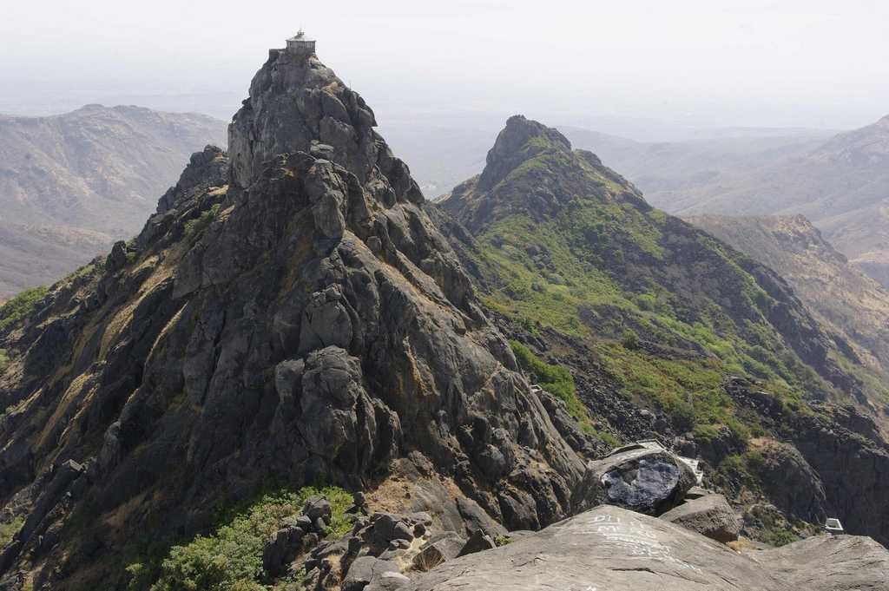

This sacred mountain also known as Revatak Parvata, rising dramatically from the plains, is covered with Jain and Hindu temples. Pilgrims from far and wide come to tackle the long climb up 10,000 stone steps to the summit, which is best begun at dawn. Be prepared to spend a full day if you want to reach the uppermost temples. Ascending in the early morning light is a magical experience, as pilgrims and porters trudge up the steps.
The Jain temples, a cluster of mosaic-decorated domes interspersed with elaborate stupas, are about two-thirds of the way up. The largest and oldest is the 12th-century Temple of Neminath, dedicated to the 22nd Tirthankar: go through the first left-hand doorway after the first gate. Many temples are locked from around 11 am to 3 pm, but this one is open all day. The nearby triple Temple of Mallinath, dedicated to the ninth Tirthankar, was erected in 1177 by two brothers. During festivals, this temple is visited by several monks and spiritual heads.
Further up are various Hindu temples. The first peak is topped by the Temple of Amba Mata, where newly-weds worship to ensure a happy marriage. Beyond here there is quite a lot of down as well as up to reach the other four peaks and further temples. The Temple of Gorakhnath is perched on Gujarat's highest peak at 1117m. The steep peak Dattatraya is topped by a shrine to a three-faced incarnation of Vishnu. Atop the final outcrop, Kalika is a shrine to the goddess Kali.
Brief History
Girnar Hill is believed to be the Nirvana bhumi of 22nd Tirthankara Lord Neminatha. A temple that commemorates the Tirthankara was built in the 11th century.
Best time to visit
The best time to visit is between November and February. The Bhavnath Mela over five days in the month of Magha (January-February) brings folk music and dancing and throngs of nagas (Saivite holy men) to Bhavnath Mahadev Temple at Girnar Taleti. It marks the time when Shiva is believed to have danced his cosmic dance of destruction. The Girnar Parikrama festival is held in November.

How to Get There?
By Road
Junagadh is accessible by ST and Private buses from other cities of Gujarat.
By Train
Two express trains run on the Ahmedabad-Veraval line.